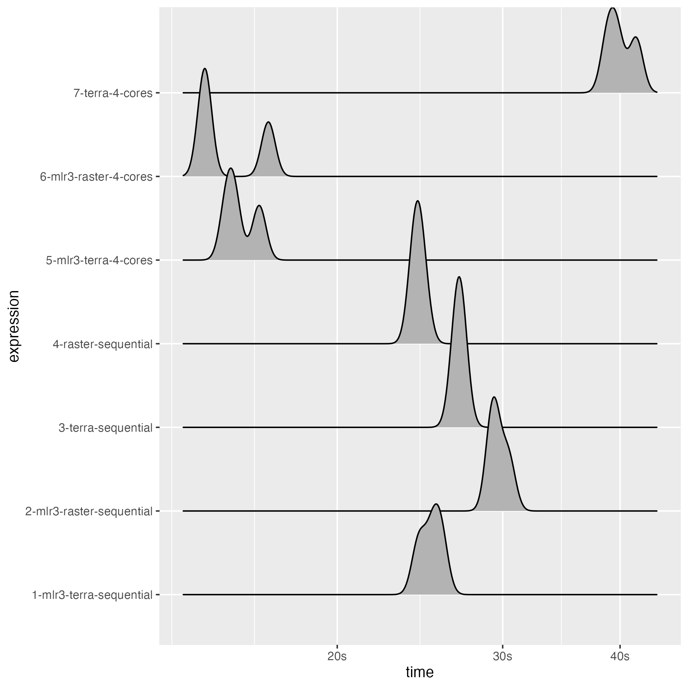

This benchmark was run on a MacBook Pro 2021 M1 Pro. If you rerun this result on your machine, your results will differ - both in relative and absolute values and maybe by a lot. This is due to the multicore performance component of your CPU and how efficient the overhead introduced by parallelization is handled (i.e. splitting and combining the chunks).
{terra} is using a socker-based parallelization by default (which the
user cannot change). The equivalent in {future} is
plan("multisession"). Using plan(multicore) on
UNIX based systems might speed up the {mlr3} approach even more. This
might also be a major part of the speedup of the
mlr3-all-cores setting.
Also note that using all available cores does not always result in faster processing. The parallelization overhead can be substantial and for small tasks you might be better of using less cores. Nevertheless, if your processing time is the range of minutes or higher, you might usually be better of using all cores (if possible).
Preparations
stack = generate_stack(list(
numeric_layer("x_1"),
factor_layer("y", levels = c("a", "b"))),
layer_size = 10)
vector = sample_stack(stack, n = 500)
task_train = as_task_classif_st(vector, id = "test_vector", target = "y")
learner = lrn("classif.ranger", num.threads = 1)
learner$train(task_train)
terra_rf = ranger::ranger(y ~ ., data = task_train$data(), num.threads = 1)
stack$y = NULL
task_predict = as_task_unsupervised(stack, id = "test")
learner$parallel_predict = TRUEBenchmark
bm = bench::mark(
"01-mlr3-4-cores" = {
plan(multicore, workers = 4)
pred = predict_spatial(task_predict, learner, chunksize = 10L)
},
"02-terra-4-cores" = {
library(terra)
pred = predict(stack, terra_rf, cores = 4, cpkgs = "ranger",
fun = function(model, ...) predict(model, ...)$predictions)
},
"03-mlr3-all-cores" = {
plan(multicore)
pred = predict_spatial(task_predict, learner, chunksize = 10L)
},
"04-terra-all-cores" = {
library(terra)
pred = predict(stack, terra_rf, cores = parallelly::availableCores(), cpkgs = "ranger",
fun = function(model, ...) predict(model, ...)$predictions)
},
check = FALSE, filter_gc = FALSE, min_iterations = 3,
max_iterations = 3, memory = FALSE)
bm$`itr/sec` = NULL
bm$result = NULL
bm$`gc/sec` = NULL
bm$memory = NULL
bm$mem_alloc = NULL
print(bm)
#> # A tibble: 4 × 8
#> expression min median n_itr n_gc total_time time gc
#> <bch:expr> <bch:tm> <bch:tm> <int> <dbl> <bch:tm> <list> <list>
#> 1 01-mlr3-4-cores 20.7s 21.4s 3 57 1.07m <bench_tm [3]> <tibble [3 × 3]>
#> 2 02-terra-4-cores 21.9s 23.1s 3 31 1.14m <bench_tm [3]> <tibble [3 × 3]>
#> 3 03-mlr3-all-cores 12.5s 12.5s 3 51 37.45s <bench_tm [3]> <tibble [3 × 3]>
#> 4 04-terra-all-cores 32.6s 32.7s 3 77 1.64m <bench_tm [3]> <tibble [3 × 3]>